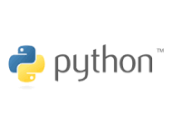

The Python programming language logo features two stylized snakes one blue on top and one yellow on the bottom intertwined and facing opposite directions.
Designed by Tim Parkin in 2006, the icon represents the duality and flexibility of the language,
while the word "Python" appears in a clean, lowercase sans-serif font next to it.
The Python programming language logo features two stylized snakes—one blue and one yellow—intertwined and facing opposite directions, creating a square-like shape with a negative-space letter "P".
Designed by Tim Parkin in 2006, the graphic draws inspiration from traditional Mayan snake representations.